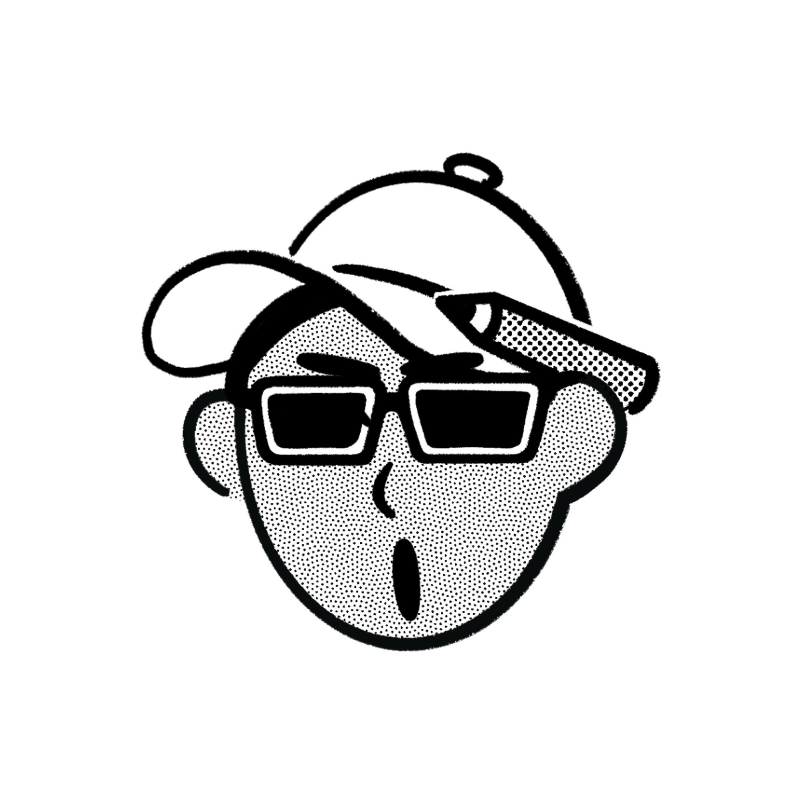

About Me
Curiosity, Code, and Continuous Learning.

Hello, I'm William Liu.
I am a student driven by a deep passion for technology and its potential to solve real-world problems. This website serves as my digital garden—a space where I document my journey of exploration, share my findings, and solidify my knowledge through the act of writing.
Thank you for visiting. I hope you find something useful or interesting here.